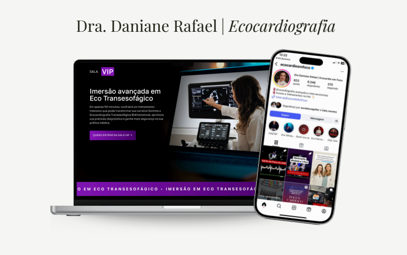
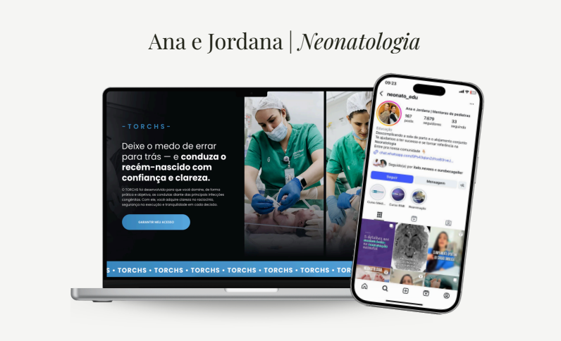

Estratégia Digital & Coprodução
Médicos, advogados, dentistas — profissionais que já tinham autoridade no presencial e precisavam de estrutura para transformar isso em resultado digital. É aí que entramos.
Uma operação estratégica digital fundada pela Rebeca Geller, especializada em posicionar, lançar e escalar especialistas — tanto no digital quanto no consultório e no escritório.
Nosso modelo de atuação é pensado para o longo prazo, com dedicação intensa, unindo inteligência de mercado, execução de ponta e acompanhamento estratégico.
Esse não é um modelo para quem busca atalhos. É para quem entende que, para crescer no digital, é necessário estrutura, investimento e visão de negócio.
"Crescer no digital não deveria depender de sorte. Mas sim de estratégia, estrutura, execução e posicionamento."
Porque especialista bom, sem operação, continua limitado ao próprio tempo.
Cada projeto começa com pesquisa de mercado, definição de persona e mapeamento da esteira. Nenhuma ação antes do diagnóstico.
Funis, páginas, automações, plataformas e criativos — montados e operando antes do primeiro real investido em tráfego.
Um time de 8 profissionais dedicados a cada detalhe enquanto você cuida dos seus pacientes e clientes.
Autoridade construída com consistência: conteúdo estratégico, big idea forte e diferenciação clara frente à concorrência.
Relatórios semanais, dashboards de LTV/CAC/ROAS e reuniões estratégicas mensais. Decisões guiadas por dados, não por intuição.
Perpétuos que vendem no automático, lançamentos com ciclos previsíveis e, quando for a hora, expansão para mercados de moeda forte.
Atuamos em três frentes estratégicas que se complementam e se adaptam ao seu momento de negócio.
Objetivo
Objetivo
Objetivo
Nosso foco são médicos, advogados, dentistas que já têm autoridade, e querem transformá-la em resultado digital real.
Ter na agenda pacientes e clientes que pagam alto pelos seus serviços
Parar de depender só do boca a boca
Lançar mentorias e cursos e faturar além do presencial
Escalar para o mercado internacional e ganhar em moeda forte
Ter uma operação profissional rodando por eles
Por trás de cada projeto, existe um time completo cuidando de cada detalhe enquanto o especialista foca no que faz melhor.
Estrategista, Mentora & Co-Fundadora
Idealizadora da operação. Estrategista digital e mentora de especialistas, com mais de 200 funis estruturados e R$50M+ em faturamento gerado.
Estratégia, Copy & Inteligência Artificial
Posicionamento de mercado, copy persuasivo e implementação de IA aplicada ao marketing digital. Especialista nos nichos médico e jurídico.
Head de Operações
Responsável por estruturar e gerenciar os processos da operação — garantindo que cada projeto seja entregue no prazo e com qualidade.
Gestão de Tráfego Pago
Especialista em funis de lançamento e perpétuo. Mais de R$10M gerados em campanhas para experts nos nichos de saúde e educação.
Copywriting — Saúde & Medicina
Especialista em copy para nichos médicos. Responsável por dezenas de campanhas de 6 dígitos em lançamentos e funis de pacientes.
Tecnologia & IA Corporativa
Implementação de soluções de inteligência artificial para otimizar processos e escalar operações. Experiência em grandes corporações nacionais e multinacionais.
Design & Identidade Visual
Mais de 5 anos no mercado digital. Responsável pelos criativos de campanha, materiais de marca e identidade visual dos projetos.
Edição & Produção de Vídeo
Foco em performance e conversão. Responsável por criativos em vídeo para tráfego pago, reels de autoridade e conteúdo orgânico.
Especialistas de diferentes nichos que decidiram construir uma operação digital séria.
Dr. Diego Bocalon
Implantodontista
Estratégia de posicionamento para o especialista em maxilas atróficas e zigomáticos se tornar referência nacional, combinando funil de pacientes de alto ticket com coprodução de infoproduto.

Dra. Daniane Rafael
Ecocardiografia
Desenvolvimento completo do produto "Imersão avançada em Eco Transesofágico" — da big idea à página de vendas e lançamento para médicos cardiologistas de todo o Brasil.
9.346 seguidores
Dra. Mariana Georges
Mentora de Médicos
Estruturação do Georges Method e expansão global — ecossistema digital com funil de pacientes, cursos e consultoria Going Global para médicos injetores de alto nível.
120 mil seguidores
Giovanna Paino
Emagrecimento
Criação e lançamento do método de emagrecimento sem dietas restritivas — funil de webinário, campanha de tráfego e comunidade com mais de 2.000 alunas ativas.
132 mil seguidores
Sandra Scalco
Ginecologista e Sexóloga
Desenvolvimento do GSA — Grupo de Supervisão Avançada em S3xualidade — posicionando a Dra. Sandra como referência nacional em saúde sexual com metodologia científica.
19,6 mil seguidores

Ana e Jordana
Neonatologia
Lançamento do curso TORCHS para médicos e residentes — do zero à autoridade em neonatologia, com funil de vendas, página de alto impacto e estratégia de conteúdo educativo.
7.679 seguidores
Especialista com a estrutura digital certa escala o faturamento — seja pelo consultório, pelo digital, ou pelos dois ao mesmo tempo.
Se você é especialista e quer ter uma operação digital profissional gerando resultado pra você — a gente está pronto para isso.
Validade da proposta — 7 dias · Vagas limitadas por ciclo